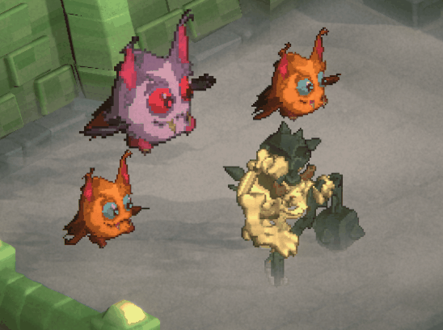

The ProPixelizer package includes a number of things to achieve perfect pixelisation in your game.
- A ProPixelizerUberShader which provides control over pixelisation, color grading, outlines, cel shading and more.
- A ShaderGraph SubTarget and examples if you want to create your own shaders.
- The ProPixelizerCamera MonoBehavior for controlling ProPixelizer's pixelisation.
- Multiple pixelization methods, ranging from fully pixelated to hybrid/selectively-pixelated scenes.
- Easy methods to Remove Pixel Creep to create crisp looking 3D pixel art.
- Different types of edges and outlines to support a variety of different pixel art styles.
- Custom tools for creating your own dither patterns and color palettes, and stepped animations.
If you need help please do contact me for support:
- via email, elliot.bentine@gmail.com
- via discord DMs (username: elliotb256)
- via the ProPixelizer server (click the icon in the nav bar to join).
I hope you enjoy using ProPixelizer, and I'm always very pleased to hear what you make with it!
Cheers!
Elliot

Above: An example scene created in ProPixelizer.